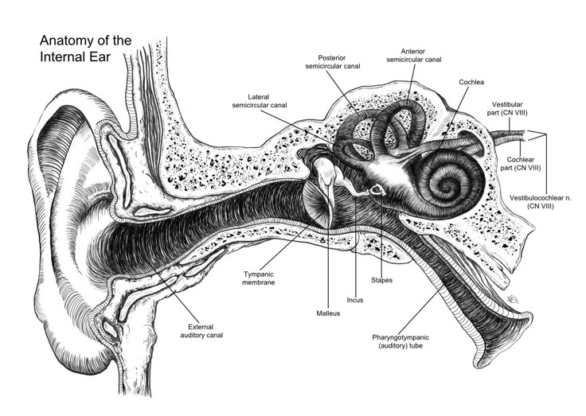

Biology · 18:11
1,400 years ago, ears were understood to do one thing: hear sounds. Nobody knew that the inner ear also controls your entire sense of balance and consciousness. Yet the Quran described it precisely.
The People of the Cave appear awake to observers — eyes open, bodies intact — yet cannot be roused. The Quran says God "struck their ears." A boxing punch to the ear causes the same: complete unconsciousness that no sound can break. Normal sleep is broken by any noise. A knocked-out person is not.
Exercise 1 of 3
The People of the Cave could not be woken even though they appeared alive. What does "We struck their ears" describe?
Exercise 2 of 3

According to modern science, what does the inner ear control besides hearing?
Exercise 3 of 3
How many semicircular canals does the inner ear contain — each sensing rotation in a different plane of space?